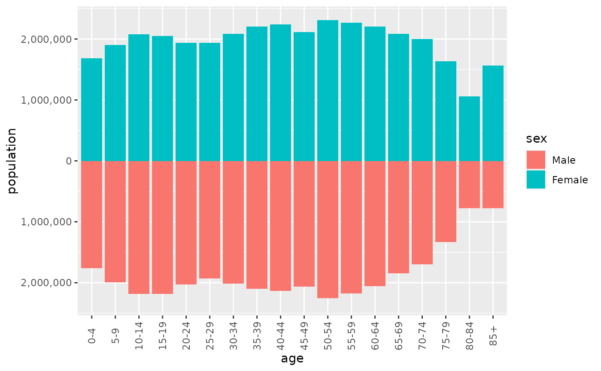

scale_x_pyramid() and scale_y_pyramid() are continuous position scales
that label the value axis of a pyramid without the minus sign and extend it
equally far on both sides of zero. coord_pyramid() does the same for a
horizontal pyramid, along with placing the age axis; these scales serve a
vertical pyramid, or a plot that needs another coordinate system.
Arguments
- ...
Other arguments passed on to
ggplot2::scale_x_continuous()orggplot2::scale_y_continuous(), such asbreaks,expandorposition.- labels
Labels for the breaks, applied to their absolute values. One of:
a function that takes the breaks and returns labels, such as
scales::label_comma(), or a formula such as~ .x / 1000;the default,
waiver(), for the usual number format;a character vector of labels, used as given;
NULLfor no labels.
- limits
One of:
NULLto use the default scale rangeA numeric vector of length two providing limits of the scale. Use
NAto refer to the existing minimum or maximumA function that accepts the existing (automatic) limits and returns new limits. Also accepts rlang lambda function notation. Note that setting limits on positional scales will remove data outside of the limits. If the purpose is to zoom, use the limit argument in the coordinate system (see
coord_cartesian()).
- symmetric
If
TRUE, the limits extend equally far on both sides of zero. Ignored whenlimitsis set.
See also
coord_pyramid(), which labels and limits the value axis of a
horizontal pyramid.
Examples
library(ggplot2)
france <- subset(europe_pop, country == "France" & year == 2024)
# A vertical pyramid, with age on x
ggplot(france, aes(x = age, y = population, fill = sex)) +
geom_pyramid() +
scale_y_pyramid(labels = scales::label_comma()) +
theme(axis.text.x = element_text(angle = 90, vjust = 0.5))
